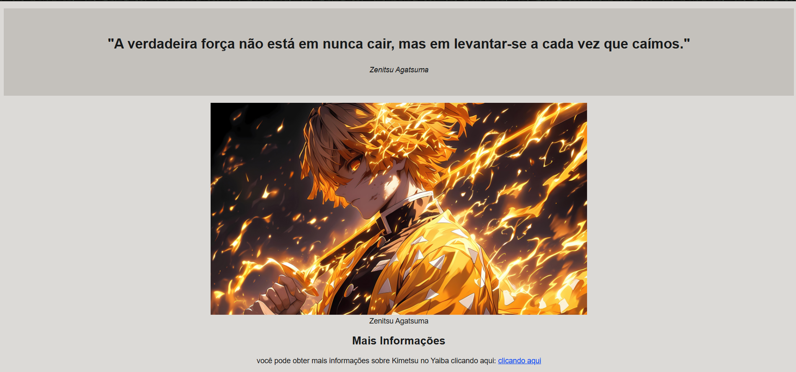

Sobre Mim
Sou um estudante dedicado e curioso, sempre buscando aprender mais sobre programação e desenvolvimento web. Tenho uma base sólida em C++ e JavaScript, além de experiência prática com HTML, CSS, Git e GitHub.
Atualmente, estou desenvolvendo meu portfólio do zero, focando em projetos práticos que mostram meu progresso. Também tenho interesse por tecnologia em geral e adoro explorar novas ferramentas que me ajudem a evoluir como desenvolvedor.
Tecnologias
Linguagens
Ferramentas e Tecnologias
Projetos
Tributo a Demon Slayer
Projeto de página de tributo a anime Demon Slayer, feito com HTML e CSS.
Ver Projeto repositório